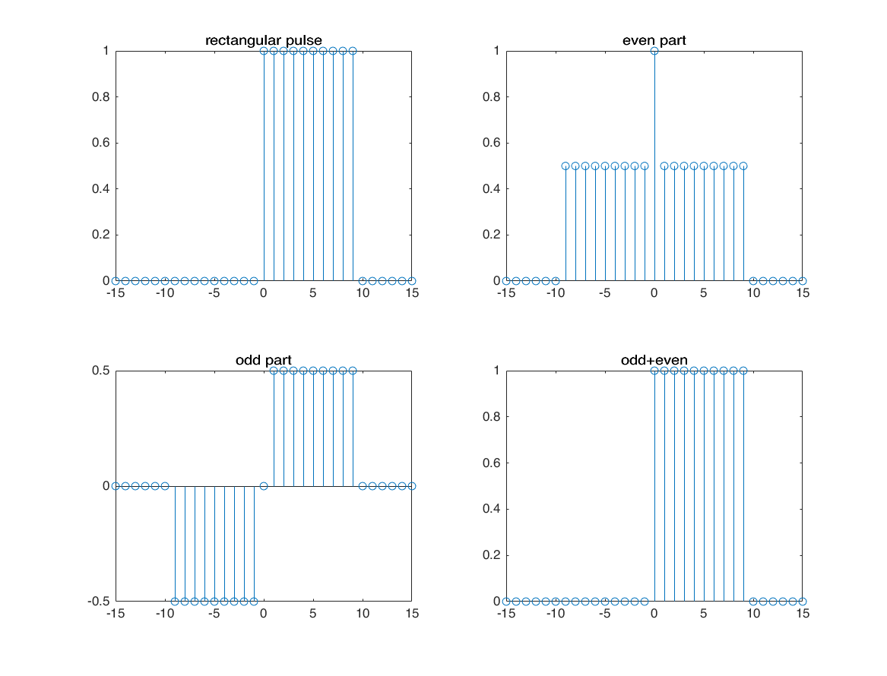
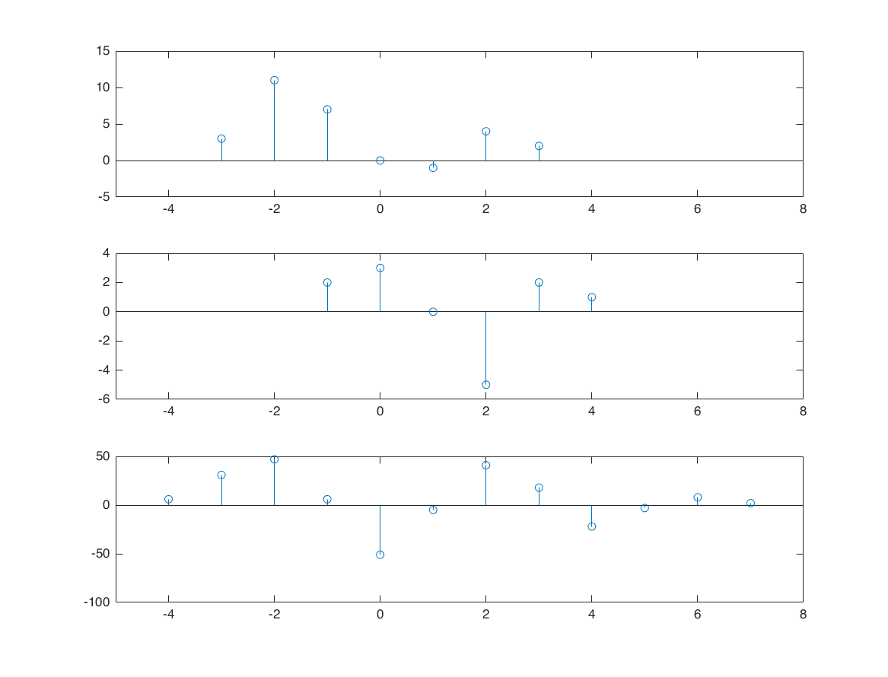
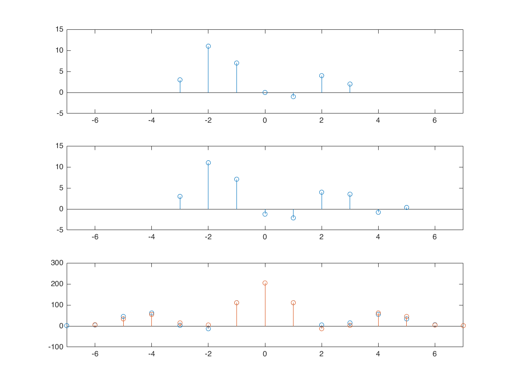
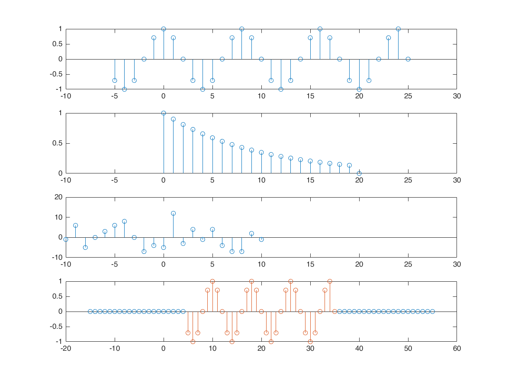

Contents
decompose signal
n = -15:15; x = stepseq(0,-15,15) - stepseq(10,-15,15); stem(n,x) [xe,xo,m] = evenodd(x,n); subplot(2,2,1); stem(n,x); title('rectangular pulse'); axis tight; subplot(2,2,2); stem(m,xe); title('even part'); axis tight; subplot(2,2,3); stem(m,xo); title('odd part'); axis tight; subplot(2,2,4); stem(m,xo+xe); title('odd+even'); axis tight;
correlation
correlation is convolution after folding conv(x,y) = x{l)*y(l) corr(x,y) = x(l)*y(-l)
x = [3 11 7 0 -1 4 2]; nx = -3:3; h = [2 3 0 -5 2 1]; nh = -1:4; [y,ny] = conv_m(x,nx,h,nh); subplot(3,1,1); stem(nx,x); xlim([-5 8]); subplot(3,1,2); stem(nh,h); xlim([-5 8]); subplot(3,1,3); stem(ny,y); xlim([-5 8]);
x = [3 11 7 0 -1 4 2];
y(n) = x(n-2)+w(n), w(n) is sequence of random noise compute the cross-correlation between y(n) and x(n)
x = [3 11 7 0 -1 4 2]; nx = -3:3; [y,ny] = sigshift(x,nx,2); w = randn(1, length(y)); nw = ny; [y,ny] = sigadd(x,nx,w,nw); figure subplot(3,1,1); stem(nx,x); xlim([-7 7]); subplot(3,1,2); stem(ny,y); xlim([-7 7]); % [x,nx] = sigfold(x,nx); % [rxy,nrxy] = conv_m(y,ny,x,nx); [rxy, nrxy] = xcorr_m(x,nx,y,ny); subplot(3,1,3); stem(nrxy,rxy); xlim([-7 7]); hold on [rxy, nrxy] = xcorr_m(y,ny,x,nx); subplot(3,1,3); stem(nrxy,rxy); xlim([-7 7]);
covolution properties
nx1 = -5:25; x1 = cos(pi/4*nx1).*(stepseq(-5,-5,25)-stepseq(25,-5,25)); figure subplot(4,1,1); stem(nx1,x1); xlim([-10 30]); nx2 = 0:20; x2 = (0.9).^nx2.*(stepseq(0,0,20)-stepseq(20,0,20)); subplot(4,1,2); stem(nx2,x2); xlim([-10 30]); nx3 = -10:10; x3 = round(5*randn(size(nx3))); subplot(4,1,3); stem(nx3,x3); xlim([-10 30]); % commutation % x1*x2=x2*x1 [y1,ny1] = conv_m(x1,nx1,x2,nx2); [y2,ny2] = conv_m(x2,nx2,x1,nx1); subplot(4,1,4); stem(ny1,y1,'k'); hold on; stem(ny2,y2,'r'); hold off; % association [yl,nyl] = conv_m(x1,nx1,x2,nx2); [yl,nyl] = conv_m(yl,nyl,x3,nx3); [yr,nyr] = conv_m(x2,nx2,x3,nx3); [yr,nyr] = conv_m(yr,nyr,x1,nx1); subplot(4,1,4); stem(nyl,yl,'k'); hold on; stem(nyr,yr,'r'); hold off; % distribution [yl,nyl] = sigadd(x2,nx2,x3,nx3); [yl,nyl] = conv_m(x1,nx1,yl,nyl); [yr1,nyr1] = conv_m(x1,nx1,x2,nx2); [yr2,nyr2] = conv_m(x1,nx1,x3,nx3); [yr,nyr] = sigadd(yr1,nyr1,yr2,nyr2); subplot(4,1,4); stem(nyl,yl); hold on; stem(nyr,yr); hold off; % identity n0 = 10; [yl,nyl] = impseq(10,-10,30); [yl,nyl] = conv_m(x1,nx1,yl,nyl); [yr,nyr] = sigshift(x1,nx1,n0); subplot(4,1,4); stem(nyl,yl); hold on; stem(nyr,yr); hold off;